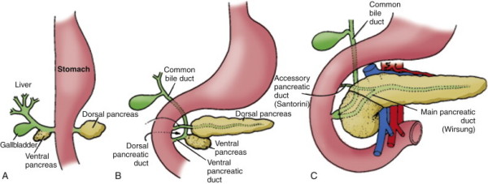

Pancreas Divisum
DEFINITION
Congenital abnormality of the pancreatic gland anatomy
leading to pancreatitis
D E A B M I M
EPIDEMIOLOGY
Common. Estimated at up to 10% of the population.
- but only 5% of these will develop attributable symptoms.
D E A B M I M
AETIOLOGY
Pancreatic development

Normally the two ducts fuse; dorsal remnant duct often remains as an
accessory duct.
Divisum occurs if the ducts do not fuse.
D E A B M I M
BIOLOGICAL BEHAVIOUR
Pathophysiology
Relative outflow of obstruction caused by a stenotic accessory
orifice.
- failure of full development.
- normal duct flow is up to 2L per day.
No good evidence to support this.
D E A B M I M
MANIFESTATIONS
1. Acute recurrent pancreatitis
2. Chronic pancreatitis.
3. Pancreatic-type pain without evidence of pancreatitis.
Mainly presents in 3-4th decades.
D E A B M I M
INVESTIGATIONS
Imaging
- CT or MRI; ERCP
ERCP is the reference standard; other methods more commonly
used.
- important that minor papilla cannulated if observed during ERCP to
demonstrate its anatomy.
Identification of a dominant dorsal duct system important
- but access undependable.
Complexity of patterns / relative duct sizes and arrangements and
drainage may affect management but specialist territory
May see a cystic dilation of the distal dorsal pancreatic duct just
proximal to the minor papilla.
D E A B M I M
MANAGEMENT
Limited evidence
1. Endotherapy
Small accessory papilla orifice is difficult to find, hard to
cannulate and anatomically indistinct.
- requires advanced ERCP skills.
Various approaches tried; dilation, stents, combinations.
- high rate of pancreatitis with balloon dilation; avoided.
- perhaps dorsal duct stenting and sphincterotomy.
2. Surgical Therapy
Same idea; enlarge dorsal duct sphincter to improve
outflow
Controlled sharp sphincter cutting
May have longer patency but generally reserved for pts failing
endotherapy.
Duodenotomy, duct cannulated, both ampullae cut and stitched to lay
open / sphincteroplasty.
- closure in 2 layers.
D E A B M I M
REFERENCES
Cameron 10th